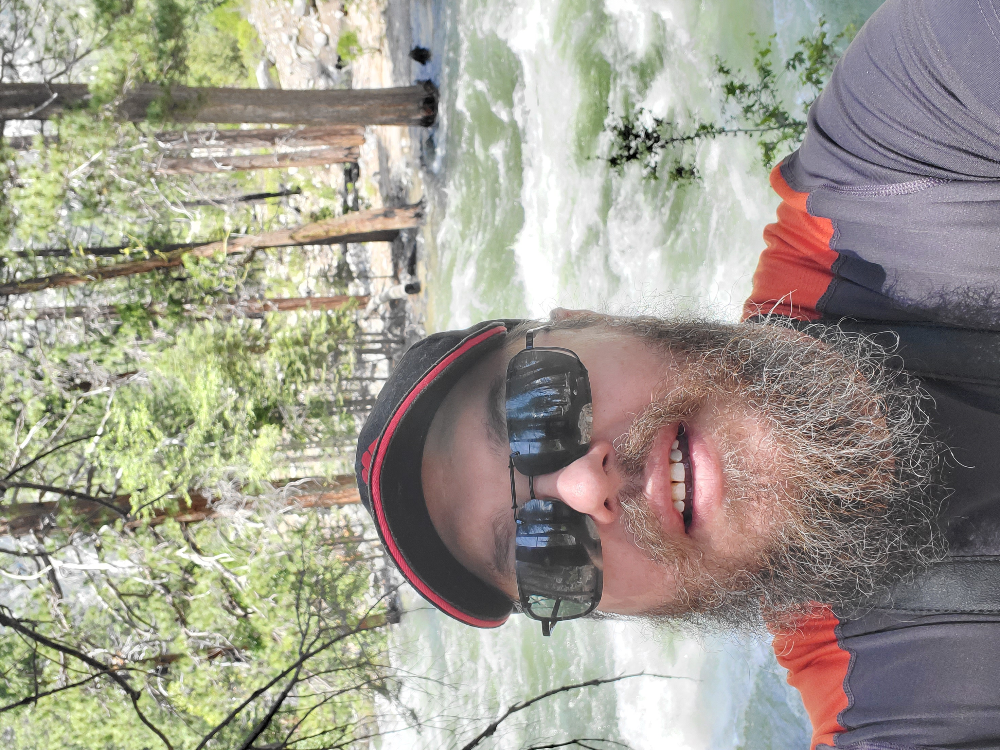

Hello World, My Name is James Burk

Here are some things about me:
- I have already graduated from Chaffey with four degrees and seven certificates. Here are the degrees:
- Cybersecurity
- Computer Information Systems
- University Studies
- History
- I love the technology field and everything about it, which is why I want to be in cybersecurity for a living.
- I also love history as another passion, hence the history degree.
- I love to hike and camp. I do it as often as my body and budget will allow.
- I am happily married for almost 7 years and I have a wonderful 28 year old son who is a compsci major here at Chaffey. He is taking CompSci 4 with our professor this semester and will graduate in May.
- I am currently attending Western Governors University working on my bachelors degree in cybersecurity. My current class is for getting the CompTIA Network+ certificate.
- I am the current president of the Chaffey College Cybersecurity Club.
- With that said, if you have any interest in joining, and all majors are welcome, feel free to shoot me an email to jburk4672@panther.chaffey.edu and I would be happy to answer any question you may have. Again, everyone is welcome!
- Some things we do are learning how to hack (ethically), technology news, job hunting information, speakers (on Tuesday Jan. 25th at 3:30PM we will have a speaker from Microsoft discussing things like internships, mentorships, job skills they look for, etc.), and we also watch some informative videos.
- One last thing we do, which is a lot of fun and all skill levels are welcome, is we do hacking competitions both as a school team and individually. It is a lot of fun and you really learn a lot about networks, Linux, vulnerabilities, etc.